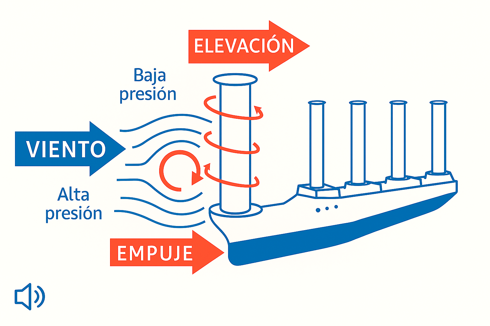

🌬️ Propulsión por Rotores Flettner (Efecto Magnus)
"¿Cómo es posible propulsar un barco aprovechando el viento… pero sin necesitar velas tradicionales? Eso es precisamente lo que intentaremos explicar a continuación: el fascinante principio del rotor Flettner y el efecto Magnus, donde la física y la ingeniería convierten al viento en un aliado silencioso y eficiente.".
⚙ Efecto Magnus
¿Sabías que...? El efecto Magnus permite generar una fuerza perpendicular al viento mediante cilindros giratorios. ¡Haz clic en la imagen para verlo en acción!

⚙ Cómo funciona
- Rotores giratorios: Cilindros verticales giran en cubierta.
- Efecto Magnus: El giro + viento crean sustentación (fuerza perpendicular al viento).
- Propulsión: El barco avanza impulsado por esta fuerza.
- Control: Ajustando velocidad y ángulo de los rotores se controla el rumbo y empuje.
✅ Ventajas
- Ahorro de combustible hasta un 30%.
- Reducción de emisiones contaminantes.
- Sistema de bajo mantenimiento y alta fiabilidad.
⚠ Desafíos
- Dependencia de la dirección e intensidad del viento.
- Alto coste inicial de instalación.
- Espacio y peso extra en el diseño del barco.
Simula: ¿Qué pasa si el viento cambia?
🔍 Comparativa con velas rígidas
- 👉 Rotores: más fuerza por área, pero más voluminosos.
- 👉 Velas rígidas: mejores en ceñida, pero más complejas mecánicamente.
- 👉 Futuro: combinación de sistemas híbridos.
🚢 Ejemplos reales
El E-Ship 1 de Enercon y el Viking Grace han demostrado el potencial de esta tecnología.
🌊 La navegación del futuro será un mar de innovación, y los rotores Flettner son solo el principio.